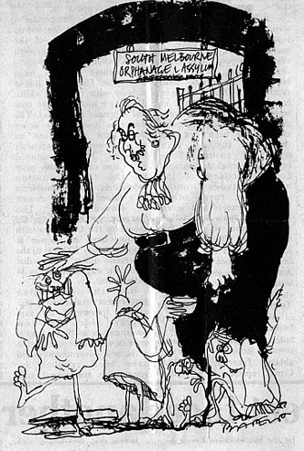

|
Just
inside the front door of the grand municipal gothic South
Melbourne town hall is a plaque that should have been read by
all the delegates to last week's ACTU congress. It should also
have been read by that keen student of history Gough Whitlam before he made his
flamboyant entry at precisely 2.30 pm last
thursday.
The plaque records
that the town hall occupies the original site of the Melbourne
Orphanage Asylum. Founded 1855 - vacated 1878 - says the plaque
quite bluntly. With 23 years of continuous operation the
Melbourne Orphanage Asylum looks like turning out to be a more
consistent performer than the Labor government.
Although the
inmates had well and truly taken over the asylum last week with
around 750 delegates in attendance from monday to friday, it was
thursday that was to present the best case studies of parental
deprivation.
Not only were the
delegates waiting for Whitlam's speech, they were also standing
by for the decision of the arbitration commission on the future
of wage indexation. Congress had decided to defer a decision on
its wages policy until after the judgment was given at 10.30 am.
After three days
of congress the South Melbourne town hall was beginning to look
tired and traumatised. When thursday's session commenced the
palms, conifers and potted flowers covered in artificial grass
on stage looked as hungover as some of the delegates.
Bob Hawke was
properly proletariat in his brown slacks, grey sportscoat and
green and grey tie. Sitting behind Hawke on stage, Brian
Harradine looked as if he believed he was running the congress.
During a debate on
shipping and shipbuilding in Australia, at 10.55 am, a delegate interrupts the speaker to advise Hawke that the arbitration commission has announced a 3.5 percent increase and a $2.80
increase in the minimum wage, to apply from the first pay period
from today. Momentarily upstaged by the faster intelligence from
the floor, Hawke tells the delegates that he has arranged for
copies of the complete judgment to be obtained from the
commission. He expects them to arrive about 11.15.
At 11.14 Harradine
and others start distributing the commission's decision whilst a
motion on uranium mining is being debated. A constant buzzing
begins as delegates discuss the decision above the AMWU delegate
from Mt Isa, who tries to speak about the dangers of uranium
mining.
South Melbourne
town hall clock starts striking noon when Jack Devereux says, on
behalf of the ACTU executive, that they have looked at the
decision of the arbitration commission and see no reason why
they should depart from their resolution regarding wage
indexation. "We must keep in mind that our first
responsibility is to our members," says Jack. The executive
wages resolution ran to two typed foolscap pages.
At 12.12, while
Devereux is still talking, John Halfpenny, the Victorian
secretary of the AMWU, comes up on stage to talk to Hawke for
two minutes. As he leaves, Hawke lights up a huge cigar that
looks worthy of any member of the Melbourne Club.
Around 12.22 Hawke
proposes that congress adjourn to consider the arbitration
commission's decision. He suggests discussing the decision after
the lunch adjournment before the prime minister addresses them.
Which seems a nursemaid's manner of stopping the babies from
crying.
It's just 2pm - 15
minutes before congress is to start and 30 minutes before
Whitlam is due. As you walk to the area in front of the stage
set aside for the media, the whole scene has changed. Before
lunch there were 21 media representatives from press and radio
and none from TV. Now there are a cluster of 22 frenetic TV news
reporters, cameramen setting up a bewildering array of microphones around the speaker's lectern. Cameras, tripods and lights
litter every inch of the media space.
John Jost and
Peter Cole-Adams of the Age, John Monks the Herald, John
Boland, Paul Barbour, Ralph Neill, even Peter Harvey of Federal
file have all come to see how Labor's fluffy, greyhaired
father is going to manage his 750 outspoken orphans.
Right on 2.30
Whitlam strides confidently in from the back of the hall
preceded by TV cameras and press photographers. "Here comes
the Big Bastard," says one of the Canberra press gallery.
"Where's the other bastard?" asks his colleague. The
polite applause continues as Whitlam makes his way on stage.
Hawke introduces
Whitlam and the fun begins as the BB starts to talk into the
muster of 11 microphones. No one can hear him. Hawke comes back
and fiddles with different microphones whilst Whitlam keeps
saying "Mr president" into different ones.
Hawke says to
Whitlam: "You're too bloody tall, that's the problem,"
Whitlam is given a
mike from a nearby table and is forced to hand hold it while
delivering his speech. Looking at Whitlam in his single breasted
grey suit (almost as
well tailored as the suit communist John Halfpenny wears the next
day) you can't help noting how florid his face and neck
are.
The
theme of his speech is to appeal for solidarity and cooperation between
unionists and the Labor government. After
talking about the worldwide problems of inflation and unemployment, father Whitlam tells his orphans just how lucky they
are to have him for a dad. "The Australian
|

|

worker has had a
measure of protection which few governments overseas, and
certainly no previous Australian government, has accorded the
worker in difficult times," he thunders. A little later he
said; "Above all, we need the cooperation and goodwill of the trade union movement. We have had
that cooperation before. As the head of the Australian Labor
government I seek and expect that cooperation now. Too much is at
stake, too much will be lost, if that cooperation is denied
us."
Father
Whitlam continues: "There was the opposition's newly revealed
industrial policy - largely Mr Fraser's own brainchild - with its
sinister apparatus of penal clauses and union intimidation. This
is not mere speculation on my part: it is spelt out in the
speeches and statements of the opposition. It is the workers of
Australia who would be caught with their pants down if The Prefect
got his way."
Dad
then tells his ungrateful little orphans how kind he had been to
them with his tax reforms and the treats he'd given them in
health, education, transport, legal aid, social security and the
rest. And just for one moment I thought I heard Oliver asking for
more.
In
conclusion, father pulls out all stops on the town hall organ.
"Unity is needed on essentials and by this congress unity on
essentials has been achieved. I count that an immense step
forward. That unity is the basis of my optimism. We can now go on
to complete our reforms, to build the prosperity of the Australian
people, to create a more just and decent society.
"Remember the alternatives. They are all too clear; they are
all too ugly. They are not just a return to a more complacent
past, they mean the reduction or destruction of everything this
government and our movement have fought to achieve... The price of
that destruction would be paid by the working men and women of
Australia. It is a price we cannot afford. It is a price we will
not pay."
Whitlam
comes down from the stage to leave the hall and he's met by his
security shadow and David Solomon, his press secretary. As he
leaves the hall, Kevin Childs of the Sunday press times the
applause.
"I
make it 27 seconds," says Kevin. "Fraser only got 12
seconds at the annual luncheon of the Victorian Council of Social
Service at Olympic Park."
"This is a bloody good reception the Big Bastard's
getting," says the cynical Canberra correspondent, who seems
swept up in the enthusiasm too, standing on his seat watching
Whitlam leave the hall.
Even
while Whitlam is going, the TV troubadors start packing and
trampling out. Only the serious media stay to see the congress
through.
John
Jost and Peter Cole-Adams of the Age stay. Whilst listening to the debate Jost
tussles with the Age crossword. he doesnt have any trouble
with two down: "Underhand 4-3-6". Maybe the atmosphere
helps.
As the
debate on wage indexation continues, Hawke lights up another
cigar. John Halfpenny of the AMWU points out that, despite media
misinterpretation, his union supports indexation, but not with
strings and guidelines attached. He says that, whilst wage and
salary earners are being told that they should be getting less
today than yesterday, the directors of BHP see things differently.
On september 23 they were considering an increase in directors
fees from $45,000 to $60,000.
When
communist Halfpenny finishes, rightwinger John Ducker rises to say
that the opportunity of supporting him in upholding wage
indexation is too good to miss.
The
vital vote is taken and the Australian unions unanimously approve
support for Whitlam's call for a policy of wage restraint. But
they do leave an out to enable unions to seek overaward demands through industrial action and collective
bargaining.
They
also flatly reject a resolution put up by the left which condemns
any compulsory wage controls. Which might just help reinforce
father's belief that he knows best.
|